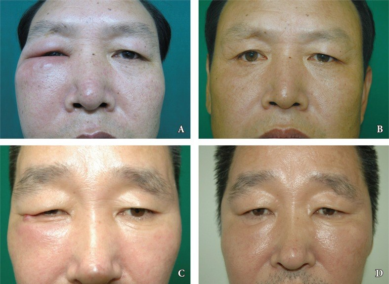
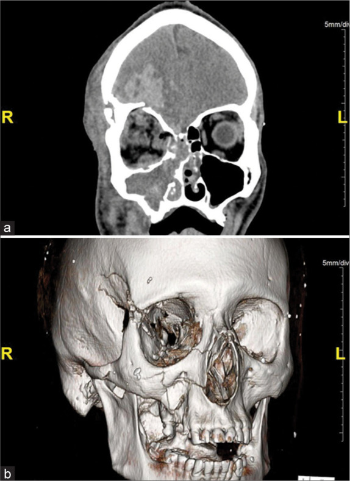

3092 — Nhiễm trùng mảnh ghép (nẹp–vít) sau nắn cố định gò má–hàm trên ở trẻ: sưng mặt muộn không phải "sưng sau mổ"
Tags: pattern:nhiem-manh-ghep pattern:sung-mat-muon pattern:xoang-ham-day-thanh pattern:loet-vet-mo pattern:hoai-tu-xuong vung:go-ma vung:so-mat vung:hoc-mat vung:xoang-ham protocol:CT-lat-mong protocol:CT-co-can-quang protocol:MRI-hoc-mat score:ty-le-thao-nep incidentaloma:khong
Mức chắc chắn (certainty): tổng hợp y văn (literature synthesis) — ghép tổng quan + 2 ca nguyên văn nhiễm nẹp tự tiêu sau nắn gò má (Arch Craniofac Surg 2016, PMCID PMC5556715, CC BY-NC), ca nguyên văn áp-xe nội sọ sau gãy trần ổ mắt + ổ răng (Surg Neurol Int 2022, PMCID PMC9699880, CC BY-NC-SA), phân tích gộp 54 nghiên cứu/562 trẻ gãy ổ mắt (Craniomaxillofac Trauma Reconstr 2026, PMCID PMC13024892, CC BY), loạt 109 ca nắn–cố định xương mặt (J West Afr Coll Surg 2026, PMCID PMC13362880, CC BY-NC-SA), 2 loạt tháo nẹp lớn (Med Pharm Rep 2019, PMCID PMC6853036, CC BY-NC-ND; Front Dent 2020, PMCID PMC7882199, CC BY-NC; J Korean Assoc Oral Maxillofac Surg 2016, PMCID PMC5009191, CC BY-NC). Không có ca do nhóm tự chụp.
Câu chốt: trẻ gãy gò má–hàm trên (ZMC) được nắn–cố định bằng nẹp, 2–13 tháng sau xuất hiện sưng một bên mặt/ổ mắt, đau âm ỉ, đôi khi chảy mủ qua đường miệng hoặc mí. Đây không phải "sưng hậu phẫu" — đó là nhiễm mảnh ghép (hardware infection), và câu hỏi quyết định không phải "kháng sinh gì" mà là "nẹp đã vững xương chưa để tháo, và có thông với xoang hàm không". Tỷ lệ nhiễm nẹp tự tiêu < 5%, nẹp titanium khoảng 2,3–12% tuỳ loạt; 45% ca tháo nẹp vì nhiễm và 45% tháo trong năm đầu (PMC5556715, PMC6853036).
1. Tổng quan bệnh học – cơ chế hình ảnh (TẠI SAO)
1.1. Vì sao mảnh ghép lại nhiễm — và vì sao trẻ khác người lớn
- Màng sinh học (biofilm): vi khuẩn bám vào bề mặt titanium/polymer trong vài giờ, tiết ma trận polysaccharide; kháng sinh không diệt được vi khuẩn trong biofilm ở nồng độ đạt được trong máu. Vì vậy nhiễm muộn, âm ỉ, tái phát sau khi ngừng kháng sinh là đặc trưng — khác áp-xe cấp sau mổ vài ngày.
- Vi chuyển động (micromotion): vít lỏng → nẹp "thở" theo nhai/nuốt → tiêu xương quanh vít (periprosthetic osteolysis) → vòng sáng quanh vít trên CT là dấu hiệu sớm nhất của nhiễm mảnh ghép.
- Đường vào từ xoang hàm: nẹp nằm trên thành trước xoang hàm; vít xuyên vào lòng xoang tạo đường thông trực tiếp từ niêm mạc xoang viêm ra mảnh ghép. Đây là lý do viêm xoang hàm trước mổ là yếu tố nguy cơ và vít ngắn < 4 mm được khuyến cáo ở xoang hàm (PMC5556715).
- Vì sao trẻ khác người lớn:
- Xương mỏng, mầm răng và thân răng sữa/vĩnh viễn sát nẹp → nẹp có thể xuyên vào mầm răng, gây nhiễm khuẩn từ ổ răng (đúng cơ chế ca áp-xe nội sọ dưới đây: ổ răng + gãy trần ổ mắt — PMC9699880).
- Xương trẻ lành nhanh → nẹp chỉ cần giữ 3–6 tuần; tháo sớm an toàn hơn người lớn khi đã có biến chứng.
- Xương đang lớn → nẹp có thể di lệch tương đối theo thời gian (growth-related migration), không phải nhiễm, nhưng cùng biểu hiện sưng/cộm — đây là cạm bẫy lớn nhất khi đọc ảnh ở trẻ.
- Nẹp tự tiêu (absorbable, PLLA/PDLLA/PGA) tan trong 9 tháng – 3 năm, giữ lực 3–4 tháng, yếu đi sau 4 tháng; mảnh polymer phân huỷ dở gây viêm mạn + nhiễm muộn — ca 48 tuổi trong bài sưng mặt 13 tháng sau nắn ZMC bằng nẹp tự tiêu (PMC5556715). Với trẻ, nhiễm nẹp tự tiêu 0/44 ca trong một loạt nhi nhưng mảnh tan dở vẫn có thể phải lấy ra (PMC5556715 dẫn loạt nhi).
1.2. TẠI SAO CT là chuẩn — vật lý của xương, kim loại và mủ
| Tổn thương | Vật lý – cơ chế | Dấu hiệu cần tìm |
|---|---|---|
| Tiêu xương quanh vít | Mô xương mất khoáng quanh vít → ít mô cản tia → giảm HU | Vòng sáng (lucency) ≥ 1 mm quanh thân vít, bờ không đều; so với vít bên cạnh |
| Nẹp lỏng / di lệch | Mất cố định | Khe giữa nẹp và xương ≥ 1 mm, nẹp nghiêng/xoay so với phim ngay sau mổ; gãy vít |
| Viêm xương (osteomyelitis) | Phù tủy + tiêu xương + phản ứng màng xương | Phản ứng màng xương (periosteal reaction), dày xương, ổ tiêu xương (sequestrum), mảnh xương chết; trên MRI phù tủy T2/STIR tăng, ngấm thuốc |
| Áp-xe mô mềm / dưới màng xương | Ổ dịch giàu tế bào, hoại tử | Ổ giảm tỷ trọng bờ ngấm thuốc, dày cân; khí trong ổ nếu vi khuẩn sinh hơi; DWI hạn chế mạnh (ADC rất thấp) |
| Thông xoang hàm–mảnh ghép | Niêm mạc xoang viêm + vít xuyên thành xoang | Dày niêm mạc xoang > 2 mm, mức dịch, vít nhô vào lòng xoang, khuyết thành xương quanh vít |
| Lan vào ổ mắt / nội sọ | Nhiễm theo đường giải phẫu (trần ổ mắt, xoang sàng) | Ổ dịch trong nón cơ / ngoài nón, mờ mỡ hốc mắt, tụ dịch ngoài màng cứng, mờ xoang; trên MRI ngấm thuốc màng não |
- Kim loại gây giả ảnh (artifact): nẹp titanium ít giả ảnh hơn thép không gỉ, nhưng vẫn gây vệt sáng/tối (streak) trên CT và vùng mất tín hiệu trên MRI. Cách đọc: cửa sổ xương (WW 2.000–4.000/WL 400–600), lát mỏng ≤ 1 mm, tái tạo đa bình diện (MPR); đánh giá mô mềm trước khi đặt nẹp hoặc bằng MRI khi CT bị nhiễu.
- TẠI SAO nhiễm muộn lại "âm thầm" trên phim: tổn thương bắt đầu bằng tiêu xương quanh vít và viêm màng xương — chỉ vài mm, dễ bị đọc là "không thay đổi so với phim cũ". Vì vậy bắt buộc so phim ngay sau mổ và đo vòng sáng quanh vít bằng mm.
1.3. Ngưỡng định lượng nằm lòng
| Đại lượng | Số liệu | Nguồn |
|---|---|---|
| Nhiễm nẹp tự tiêu sau cố định xương mặt (đa số loạt) | < 5% | PMC5556715 |
| Nhiễm nẹp tự tiêu trong 59 ca ZMC | 1 ca | PMC5556715 (dẫn Bell & Kindsfater) |
| Nhiễm nẹp tự tiêu ở 44 ca trẻ | 0 ca | PMC5556715 |
| Nhiễm nẹp ở xương hàm dưới: tự tiêu vs titanium | 4,26% (2/47) vs 2,27% (1/44) | PMC5556715 |
| Tháo nẹp: titanium vs tự tiêu | 12% vs 2–3% | PMC5556715 |
| Tỷ lệ tháo nẹp chung ở xương mặt | 7% – 33,8% | PMC6853036 |
| Tháo nẹp trong loạt 1.026 ca nẹp hàm mặt | 9,16%; nhiễm và lộ nẹp là lý do thường gặp nhất | PMC7882199 |
| Tháo nẹp trong loạt 530 ca chấn thương hàm mặt | 22,6%, trong đó 81,7% do bệnh nhân yêu cầu | PMC5009191 |
| Tháo nẹp trong 109 ca nắn–cố định (Nigeria) | 2,8% (3/109); 1 ca nhiễm + nẹp di lệch, 1 ca trẻ — lo ngại ảnh hưởng tăng trưởng | PMC13362880 |
| Nhiễm là lý do tháo nẹp | 45% (9/20) | PMC6853036 |
| Thời điểm tháo nẹp | 45% trong năm đầu (15% < 3 tháng; 15% 3–6 tháng; 15% 6–12 tháng); 30% sau 2 năm | PMC6853036 |
| Biến chứng vật liệu tái tạo ổ mắt ở 562 trẻ/563 mảnh ghép | nhiễm/tháo vật liệu/quay lại phòng mổ 1–4% ở mọi nhóm | PMC13024892 |
| Nẹp tự tiêu: thời gian tan / giữ lực | 9 tháng – 3 năm / 3–4 tháng (yếu sau 4 tháng) | PMC5556715 |
| Vít ở thành xoang hàm | khuyến cáo < 4 mm để không xuyên vào xoang | PMC5556715 |
- Chưa rõ — cần tra: không có thang điểm hình ảnh được thẩm định cho nhiễm mảnh ghép xương mặt; mọi ngưỡng mm ở mục 1.2 là tổng hợp mô tả hình ảnh, không phải tiêu chuẩn chẩn đoán.
2. Mẫu hình + chẩn đoán phân biệt theo vị trí (Gamut)
- Theo vị trí — nẹp ở đâu, biến chứng ở đó:
- Thành trước xoang hàm / trụ gò má–hàm trên: sưng má, đau khi nhai, chảy mủ qua lợi/rãnh tiền đình; hay kèm viêm xoang hàm.
- Bờ dưới ổ mắt / sàn ổ mắt: sưng mí dưới, đỏ, có thể lồi mắt/nhìn đôi nếu áp-xe trong ổ mắt; nẹp/mesh gần mí dễ lộ (exposure).
- Cung gò má – khớp trán–gò má: sưng vùng thái dương, cộm da, đau khi há miệng; nẹp nông dưới da dễ lộ ở trẻ gầy.
- Nẹp xuyên mầm răng / ổ răng: áp-xe quanh răng sữa, có thể lan xoang hàm → hốc mắt → nội sọ (ca PMC9699880: gãy trần ổ mắt + áp-xe răng → áp-xe trán).
- Theo thời gian — "sưng" ở tuần 1 khác "sưng" ở tháng 6:
- < 1 tháng: nhiễm vết mổ cấp, tụ máu nhiễm, dehiscence; thường không cần tháo nẹp nếu nẹp vững.
- 1–6 tháng: nhiễm biofilm, lộ nẹp, lỏng vít, viêm xoang quanh vít — đây là cửa sổ phổ biến nhất (45% tháo nẹp trong năm đầu — PMC6853036).
- > 6 tháng – vài năm: viêm xương mạn, mảnh nẹp tự tiêu tan dở, di lệch theo tăng trưởng; ca 13 tháng và 6 tháng trong PMC5556715.
- Gamut "sưng mặt muộn sau nắn ZMC": nhiễm mảnh ghép · áp-xe răng/mầm răng · viêm xoang hàm · tụ máu tổ chức hoá · lộ vật liệu không nhiễm · di lệch theo tăng trưởng · tái phát u (hiếm nhưng phải nghĩ nếu không có chấn thương) · rò dịch não tuỷ (nếu kèm gãy trần ổ mắt).
3. Bảng so sánh phân biệt (ma trận đối chiếu)
| Thực thể (entity) | Hình ảnh điển hình (CT/MRI) | Chốt vào (rule-in) | Chốt loại (rule-out) | Gợi ý xác nhận |
|---|---|---|---|---|
| Nhiễm mảnh ghép (biofilm) | Vòng sáng quanh vít, khe nẹp–xương, dày mô mềm khu trú, ổ dịch bờ ngấm thuốc | Sưng/đau muộn + vít lỏng trên CT + mủ khi mở; cấy S. aureus / tụ cầu da / liên cầu miệng / vi khuẩn kỵ khí | Nẹp vững, không vòng sáng, không ổ dịch → không phải nhiễm mảnh ghép | CT lát ≤ 1 mm + so phim sau mổ; cấy mủ + siêu âm dịch; thử kháng sinh ngắn |
| Áp-xe do răng/mầm răng | Ổ tiêu xương quanh chân răng sữa, mờ xoang hàm cùng bên, có thể khí | Sâu răng/sưng lợi + ổ quanh chóp; đau khi gõ răng | Nẹp không liên quan răng, không ổ quanh chóp → nghĩ mảnh ghép | Phim quanh chóp/CBCT; nhổ răng sữa/điều trị tủy, dẫn lưu |
| Viêm xoang hàm quanh vít | Dày niêm mạc xoang > 2 mm, mức dịch, vít nhô vào lòng xoang | Chảy mủ mũi cùng bên + đau vùng má, hình ảnh xoang tương ứng đúng vị trí vít | Niêm mạc xoang < 2 mm, không vít xuyên thành → không do nẹp | Nội soi mũi xoang, CT xoang; rút vít xuyên xoang + mở thông nếu tái diễn |
| Viêm xương hàm (osteomyelitis) | Phản ứng màng xương, sequestrum, tiêu xương lan, phù tủy T2/STIR | Đau sâu + sốt + mủ xương + hình ảnh phá xương | Xương nguyên vẹn, chỉ vòng sáng quanh vít → nhiễm mảnh ghép đơn thuần | CT + MRI; cấy xương; kháng sinh dài (4–6 tuần), cắt lọc |
| Lộ vật liệu không nhiễm | Nẹp nhô qua niêm mạc/da, mô mềm quanh mỏng nhưng không ổ dịch | Thấy nẹp, không mủ, không đau, không vòng sáng | Có mủ/đau/vòng sáng → nhiễm, không phải lộ đơn thuần | Khám + CT; cắt bỏ nẹp nông nếu cọ sát, theo dõi |
| Mảnh nẹp tự tiêu tan dở | Nốt/tổ chức không đồng nhất quanh vị trí nẹp, có thể viền ngấm thuốc, không có kim loại | Tiền sử nẹp tự tiêu + sưng 6–13 tháng + mảnh polymer khi lấy ra | Có kim loại trên CT → không phải nẹp tự tiêu | MRI (tránh giả ảnh), siêu âm; lấy mảnh nếu có triệu chứng |
| Di lệch theo tăng trưởng | Nẹp di chuyển so với phim cũ nhưng không vòng sáng, không ổ dịch, xương lành | Trẻ đang lớn + cộm da, không viêm; xương đã liền | Đau/mủ/vòng sáng → nhiễm, không phải di lệch | So phim chuỗi; tháo nẹp theo kế hoạch nếu cộm/lệch |

Hai ca người lớn (48 tuổi — A/B; 45 tuổi — C/D) sau nắn gò má và sàn ổ mắt bằng nẹp tự tiêu: (A) sưng má phải 13 tháng sau mổ; (C) sưng đỏ vùng ổ mắt phải 6 tháng sau mổ; (B, D) hết sưng sau khi lấy mảnh nẹp–vít phân huỷ dở. Ảnh nguyên bản, không crop. Nguồn: Arch Craniofac Surg 2016, PMCID PMC5556715, CC BY-NC 3.0.4. Protocol chụp + phân tầng xử trí
4.1. Protocol hình ảnh
- CT sọ–mặt không cản quang, lát ≤ 1 mm, cửa sổ xương + cửa sổ mô mềm, tái tạo đa bình diện — đây là chuẩn để đo vòng sáng quanh vít, khe nẹp–xương, niêm mạc xoang, và phát hiện sequestrum. Bắt buộc so với CT ngay sau mổ (cùng máy nếu được) để phát hiện thay đổi ≥ 1 mm.
- CT có cản quang khi nghi áp-xe mô mềm, viêm xoang biến chứng, hoặc lan ổ mắt: tìm ổ dịch bờ ngấm thuốc, dày cân, huyết khối xoang hang (nếu lồi mắt + sốt cao).
- MRI hốc mắt – hàm mặt (T1, T2 fat-sat, DWI, T1 sau tiêm) khi: lồi mắt, nhìn đôi, giảm thị lực, nghi lan nội sọ, hoặc CT bị giả ảnh kim loại nhiều. Giá trị: phân biệt phù/viêm mô mềm – áp-xe (DWI hạn chế mạnh) – viêm tủy xương (phù tủy T2 tăng).
- Siêu âm đầu dò thẳng tần số cao ở vùng má/mí: phát hiện ổ dịch dưới màng xương, hướng dẫn chọc hút cấy — rẻ, không bức xạ, làm được tại giường.
- Phim quanh chóp/CBCT răng khi ổ nhiễm gần mầm răng/răng sữa — ổ răng là nguồn nhiễm thường bị bỏ sót (ca PMC9699880).
4.2. Phân tầng xử trí (không có thang điểm — dựa trên 3 câu hỏi)
- Câu 1 — Xương đã liền chưa? Trẻ thường liền sau 3–6 tuần với nẹp đúng; nếu đã liền → tháo nẹp là an toàn và là điều trị triệt để nhiễm biofilm.
- Câu 2 — Có ổ mủ/áp-xe hoặc nẹp lỏng? Có → mở dẫn lưu + tháo nẹp/vít lỏng + cấy; để lại nẹp lỏng là nguồn tái phát.
- Câu 3 — Có thông xoang hàm hoặc lan ổ mắt/nội sọ? Có → phối hợp TMH/nhãn khoa/ngoại thần kinh: rút vít xuyên xoang, mở thông xoang hàm, dẫn lưu ổ mắt/nội sọ; không chờ kháng sinh đơn thuần.
| Mức độ | Hình ảnh – lâm sàng | Xử trí | Kháng sinh |
|---|---|---|---|
| Nhiễm nông vết mổ | Đỏ, chảy dịch, không ổ dịch sâu, nẹp vững | Mở da/niêm mạc, dẫn lưu, giữ nẹp | 1–2 tuần kháng sinh theo cấy (kinh nghiệm: kháng tụ cầu) |
| Nhiễm sâu / áp-xe quanh nẹp | Ổ dịch ngấm thuốc, vòng sáng quanh vít, mủ | Tháo nẹp/vít lỏng, cắt lọc mô hoại tử, dẫn lưu | 2–4 tuần, theo cấy |
| Viêm xương | Sequestrum, phản ứng màng xương, phá xương | Cắt lọc xương chết, tháo nẹp, tái tạo sau | 4–6 tuần (khởi đầu tĩnh mạch) |
| Thông xoang / viêm xoang quanh vít | Dày niêm mạc > 2 mm, vít trong lòng xoang | Rút vít + mở thông xoang hàm (FESS); tháo nẹp nếu tái diễn | 2–4 tuần + điều trị TMH |
| Lan ổ mắt / nội sọ | Ổ dịch hốc mắt, tụ dịch ngoài màng cứng, viêm màng não | Dẫn lưu cấp + tháo vật liệu, phối hợp đa chuyên khoa | Kháng sinh tĩnh mạch dài, theo cấy |
flowchart TD
A[Trẻ sưng mặt/ổ mắt 1-13 tháng sau nắn ZMC] --> B[CT ≤ 1 mm: xương + mô mềm, so phim sau mổ]
B --> C{Vòng sáng quanh vít, khe nẹp-xương, ổ dịch?}
C -->|Không| D[Loại trừ: di lệch tăng trưởng, nẹp tự tiêu tan dở, áp-xe răng]
C -->|Có| E{Xương đã liền và nẹp còn cần giữ?}
E -->|Đã liền| F[Tháo nẹp + vít lỏng + cấy + dẫn lưu]
E -->|Chưa liền| G{Áp-xe hoặc nẹp lỏng?}
G -->|Có| F
G -->|Không| H[Kháng sinh theo cấy + theo dõi 1-2 tuần]
F --> I{Có vít xuyên xoang hoặc lan ổ mắt/nội sọ?}
I -->|Có| J[Rút vít xuyên xoang, mở thông xoang, dẫn lưu ổ mắt/nội sọ]
I -->|Không| K[Theo dõi lành thương + phim kiểm tra]
H --> K
J --> K
5. Biến thể bình thường và cạm bẫy
- "Nẹp tự tiêu thì không nhiễm": sai. Nẹp tự tiêu tan dở gây viêm mạn + nhiễm muộn tới 13 tháng (PMC5556715); trên CT không thấy kim loại nên rất dễ bỏ qua — phải hỏi loại nẹp đã dùng.
- Sưng sau mổ "bình thường": phù mô mềm sau nắn ZMC giảm dần trong 2–4 tuần; sưng tăng lại hoặc xuất hiện sau 6 tuần là bất thường, không phải "phù kéo dài".
- Di lệch theo tăng trưởng ≠ nhiễm: trẻ lớn, nẹp di chuyển nhưng không vòng sáng, không mủ, không đau → tháo theo kế hoạch nếu cộm; không dùng kháng sinh dài.
- Bẫy kim loại trên CT: giả ảnh streak quanh nẹp có thể che mất vòng sáng 1 mm; đổi cửa sổ, MPR, hoặc MRI khi cần. Đừng kết luận "không tiêu xương" trên ảnh nhiễu.
- Bẫy "chỉ đau, không sưng": đau khi nhai + vít lỏng có thể là biểu hiện sớm nhất — tương tự 30% ca tháo nẹp vì đau không có dấu nhiễm (PMC6853036); ở trẻ không được bỏ qua đau tăng dần sau 3 tháng.
- Bẫy ổ răng: trẻ gãy ZMC kèm răng sữa sâu/tổn thương — ổ nhiễm từ răng có thể lan xoang → hốc mắt → nội sọ dù nẹp vững (ca PMC9699880: áp-xe trán sau chấn thương mặt + áp-xe răng, có rách màng não ở trần ổ mắt).
- Bẫy satisfaction of search: đã thấy nẹp lỏng thì vẫn phải soát xoang hàm, hốc mắt, nội sọ và mầm răng — bỏ sót ổ thứ hai là sai lầm hay gặp.

Ca người lớn 40 tuổi (minh hoạ cơ chế lan nhiễm, không phải trẻ): (a) CT coronal không cản quang — đám giảm tỷ trọng/đậm độ hỗn hợp ở thuỳ trán phải tại vị trí gãy trần ổ mắt, kèm mờ các xoang cùng bên; (b) tái tạo 3D — gãy phức tạp xương mặt phải gồm trần ổ mắt. Ổ nhiễm đường vào từ áp-xe răng. Ảnh nguyên bản, không crop. Nguồn: Surg Neurol Int 2022, PMCID PMC9699880, CC BY-NC-SA 4.0.6. Tự lượng giá — Blind Quiz
Ca 1 — Bé trai 13 tuổi, ngã xe đạp gãy ZMC phải, được nắn–cố định bằng nẹp 4 tháng trước. Nay sưng má phải tăng dần 2 tuần, đau khi nhai, không sốt.
- Hỏi: (1) 3 chẩn đoán phân biệt cho sưng muộn; (2) trên CT bạn đo những gì; (3) khi nào phải tháo nẹp?
Bấm để hiện đáp án (findings + chẩn đoán)
- Ảnh minh hoạ (người lớn, không phải bệnh nhi): sưng má/ổ mắt một bên xuất hiện 6–13 tháng sau nắn bằng nẹp tự tiêu, hết sau khi lấy mảnh nẹp phân huỷ dở.
- Phân biệt: nhiễm mảnh ghép (vòng sáng quanh vít, khe nẹp–xương), áp-xe răng/mầm răng, viêm xoang hàm quanh vít, di lệch theo tăng trưởng, mảnh nẹp tự tiêu tan dở.
- Đo trên CT: vòng sáng quanh vít (mm), khe nẹp–xương (mm), dày niêm mạc xoang (ngưỡng > 2 mm), vít có nhô vào lòng xoang, ổ dịch/khí, phản ứng màng xương.
- Tháo nẹp khi: xương đã liền + có áp-xe/nẹp lỏng/lộ nẹp/viêm xoang tái diễn; không tháo khi nẹp vững, chỉ nhiễm nông.
- Nguồn ảnh: Arch Craniofac Surg 2016, PMCID PMC5556715, CC BY-NC 3.0 (nguyên bản).
Ca 2 — Bé 9 tuổi, chấn thương mặt 3 tuần trước (gãy trần ổ mắt + xoang hàm), nay sốt, sưng mí trên, đau đầu; khám thấy răng sữa sâu, lợi sưng.
- Hỏi: đường lan nhiễm khả dĩ? Dấu hiệu nào trên ảnh buộc phải tầm soát nội sọ?
Bấm để hiện đáp án
- Đường lan: áp-xe răng → xoang hàm → trần ổ mắt gãy → nội sọ (hoặc qua tĩnh mạch không van vùng mặt).
- Dấu hiệu báo động: đám giảm tỷ trọng/đậm độ hỗn hợp ở thuỳ trán cùng bên với gãy trần ổ mắt; mờ xoang cùng bên; trên MRI ổ hạn chế khuếch tán mạnh = áp-xe.
- Xử trí: CT/MRI não + hốc mắt, kháng sinh tĩnh mạch, dẫn lưu áp-xe + xử lý ổ răng, phối hợp ngoại thần kinh; không chỉ điều trị "viêm xoang".
- Nguồn ảnh: Surg Neurol Int 2022, PMCID PMC9699880, CC BY-NC-SA 4.0 (nguyên bản).
Ca 3 — Bé 11 tuổi, nắn ZMC 8 tháng trước, nay cộm da vùng gò má, không đau, không mủ; CT: nẹp di chuyển 3 mm so với phim cũ nhưng không vòng sáng quanh vít.
Bấm để hiện đáp án
- Chẩn đoán: di lệch nẹp theo tăng trưởng, không phải nhiễm.
- Vì sao: xương đã liền, không phản ứng tiêu xương/viêm; nẹp nông dưới da ở trẻ đang lớn.
- Xử trí: tháo nẹp theo kế hoạch (thủ thuật nhỏ) nếu cộm/ảnh hưởng thẩm mỹ; không kháng sinh dài, không dẫn lưu.
- Cạm bẫy: nếu chỉ đọc "nẹp di lệch" mà bỏ qua thiếu vòng sáng + không mủ sẽ điều trị nhiễm oan; ngược lại, nếu có vòng sáng + đau thì đó là nhiễm, không phải tăng trưởng.
Bài liên quan chéo
- 1716 – Gãy phức hợp gò má–hàm trên ở trẻ
- 1708 – Gãy lồi cầu xương hàm dưới ở trẻ
- 1918 – Nhiễm CMV sau ghép gan ở trẻ (nguyên tắc "ổ nhiễm thứ hai" ở trẻ có can thiệp)
- 249 – Rò động mạch cảnh–xoang hang do chấn thương (biến chứng mạch cần loại trừ khi có lồi mắt + tiếng thổi)
Ảnh
3092_nhiem-mang-ghep_clinical-absorbable_PMC5556715-F1.jpg— 2 ca sưng muộn sau nẹp tự tiêu; Arch Craniofac Surg 2016, PMCID PMC5556715, CC BY-NC 3.0.3092_nhiem-mang-ghep_CT-abscess_PMC9699880-F1.jpg— CT coronal + 3D gãy xương mặt kèm áp-xe nội sọ; Surg Neurol Int 2022, PMCID PMC9699880, CC BY-NC-SA 4.0.- Chi tiết nguồn, giấy phép, phái sinh:
images/CREDITS.md; link bài gốc:sources.md.
Không dùng để chẩn đoán độc lập khi chưa có người hướng dẫn.